aloooo Anggiaa, I made this website myself.. hehe maaf aku cuma bisa buat sesederhana ini dengan keterbatasan ilmu yang aku punya :D
Bacanya harus sesuai urutan yaaa!!
|
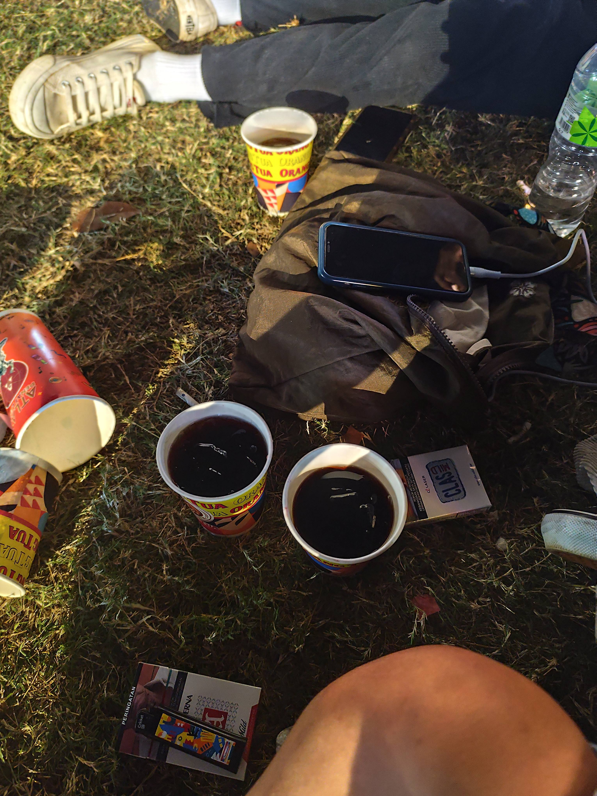
after that concert (TSP Vol.7) U DM me on Instagram.
lalu kamu ngajak aku ketemu untuk nemenin kamu ke Pasar Baru untuk
service digicam kamu, ternyata itu modus kamu doang kan
biar bisa ketemu aku :p
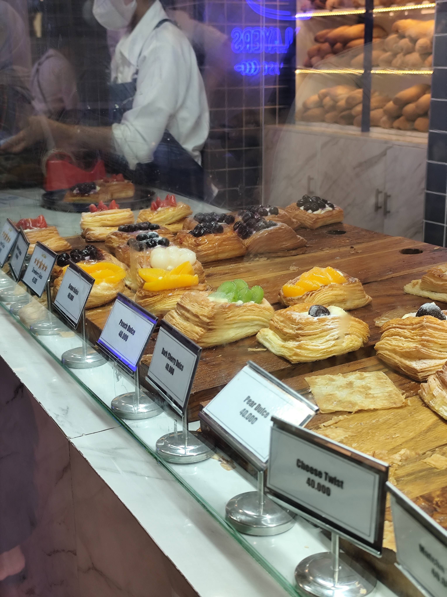 tapi setelah pertemuan itu aku ngerasa semakin tertarik sama kamu, kamu bawel, suka cerita, beda sama aku yang nunggu ditanya dulu baru mau ngobrol atau cerita. Pada saat itu aku berharapnya sih setelah pertemuan hari itu akan ada pertemuan selanjutnya HAHA! |
|
|
|
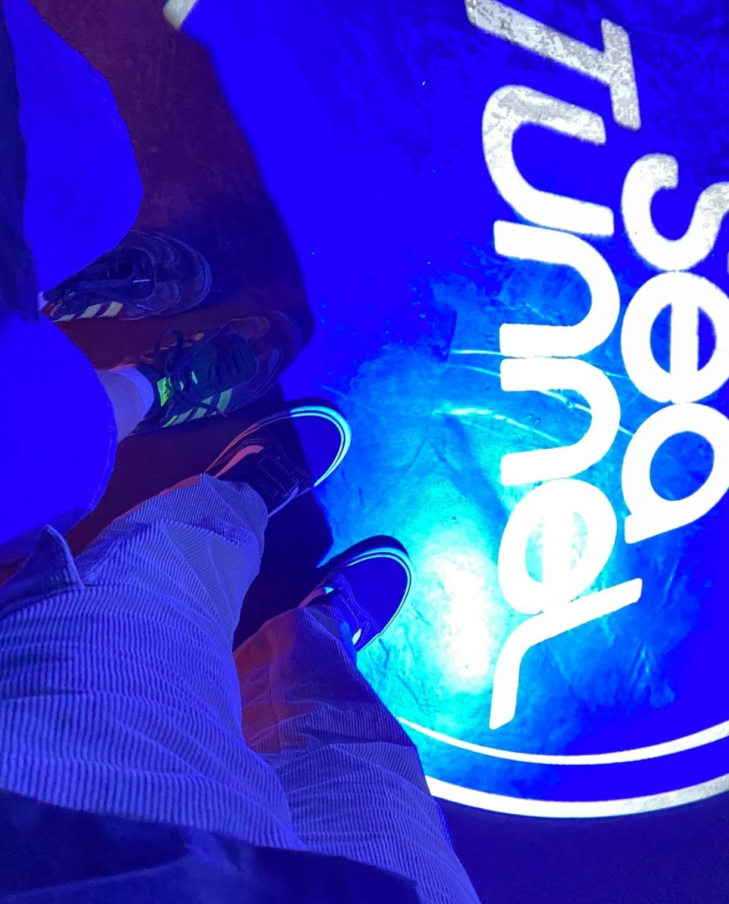
JUJYUUURRRR pas hari itu Minggu, 6 Oktober 2024 gatau kenapa ya pas mau
ketemu aku degdegan banget banget bangett WKWKWKW, mungkin inideh pertama kalinya
aku ngerasain rasa cintanya muncul *YAHAHAY. Aku seneng pas OTW ke Kaizen,
kan kepala aku agak sedikit panas, kamu megang pala aku buat ngecek suhu, kan kenyamanan
yaa aku, yaudah aja aku suru pegang terus HAHAHAHA. 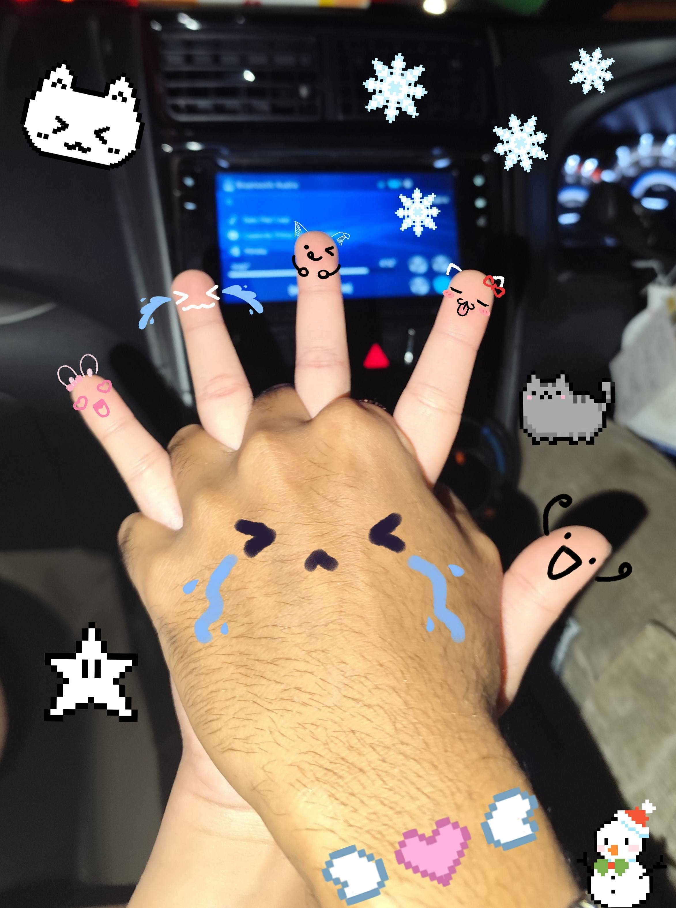 Terus juga pas pulang kamu ngingetin bikin konten yg pegangan tangan ini, aku salting BANGETTT JIRSSSS WKWKWKWKWK. POKONYA HAPPY BGTTTT DAKKKHHHHHH. |
|
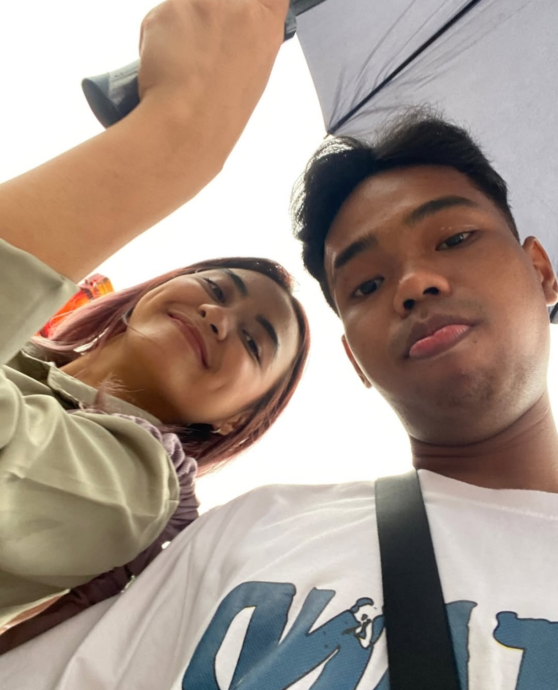
Awalnyaa kita makan sushi duluu, niatnya mau ke Sushi Salad 368 yang di Blok M
eh ternyata karna FYP TikTok jadinya waiting list ga expect
bangett:(((, karna aku lagi pengen banget makan sushi jadinya kita ke tempat lainnya
yang ada sushinyaa. Nah beres dari situu, kita mampir ke event teh pucukk, kamu inget kan? kita lanjut jajan disituu, terussss kita ke mobill karna hujannya mulai agak derass. Dari situ aku dah sadar banget sama gerak-gerik kamu WKWKWK cuma aku nyimak dulu aja kamu mau ngomong apanya, eh ternyata benerrr mau nembak aku HEHEHEHE. Aku senengg, sebenernya aku mau langsung jawab mau, tapi kamu langsung ngasi aku waktu untuk jawab, gaperlu buru-buru, jadi yaudadehh aku jawabnya keesokan harinya. Hari ter-happy akuuu saat itu, tapi ternyata setelah dijalanin, setiap harinya selalu happy selagi ngejalaninnya sama kamu :) |
Selamat Ulang Tahun yaa sayang.. terimakasih sudah hadir ke hidup aku, terimakasih sudah mewarnai
hari aku.. terimakasih sudah selalu mengusahakan apapun untuk aku. Sayang, di hari ulang tahun kamu ini
semoga kamu jadi pribadi yang lebih baik, lebih matang, lebih-lebih dalam segala hal dari tahun-tahun
sebelumnya yaa.. aku harap di tahun ini kamu bisa lebih terbuka ke aku biar kamu ga mendem perasaan kamu sendirian.
Terimakasih kamu sudah melalui hari-hari kamu yang kadang sulit dijalani, kadang sulit buat dilewatin karna hari
yang menurut kamu kurang baik, U did great last year! Terimakasih yaa sayang sudah hidup sampai sekarang,
semoga dunia lebih baik ke kamu seterusnya dan selalu diiringi dengan hal-hal baik yaa.
Sehat dan selalu dilancarkan rezekinya, Anggia. I Love U <3
Semoga yang di-semoga-kan, lekas cepat terjadi.
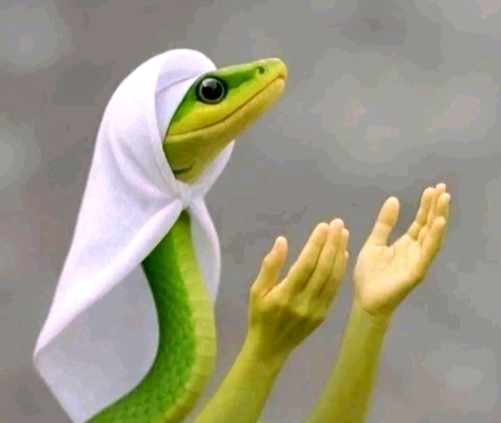
AAMIIN!!
| 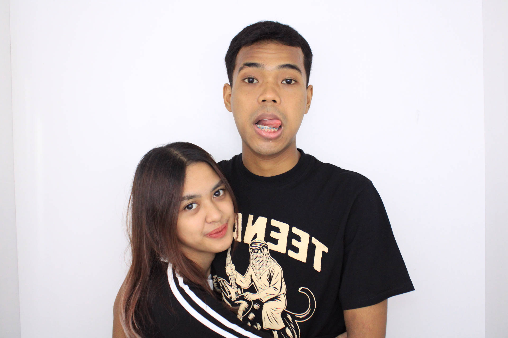 | 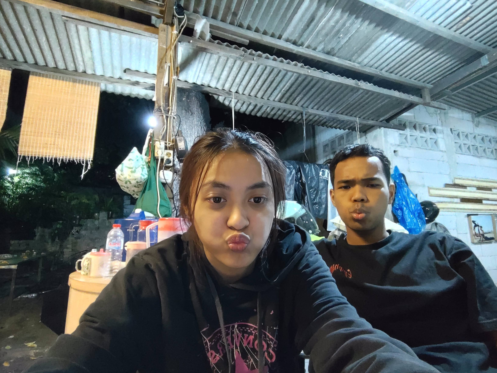 | 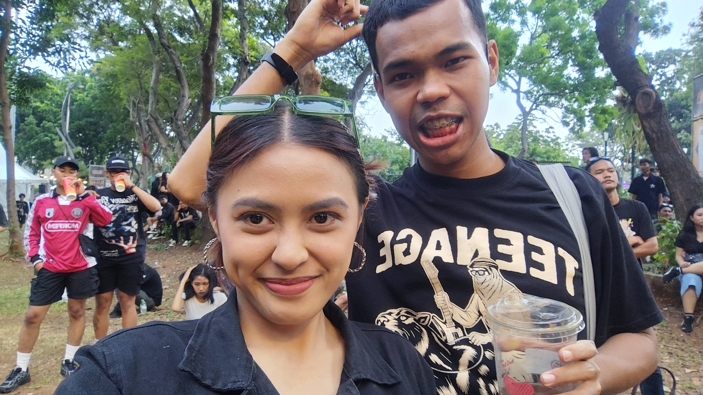 |
| 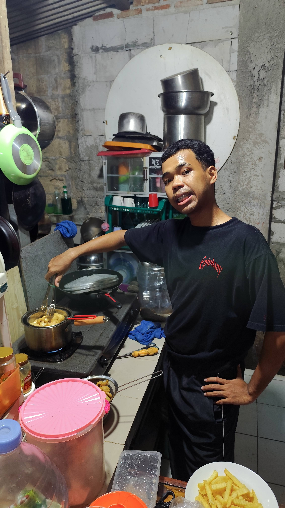 | 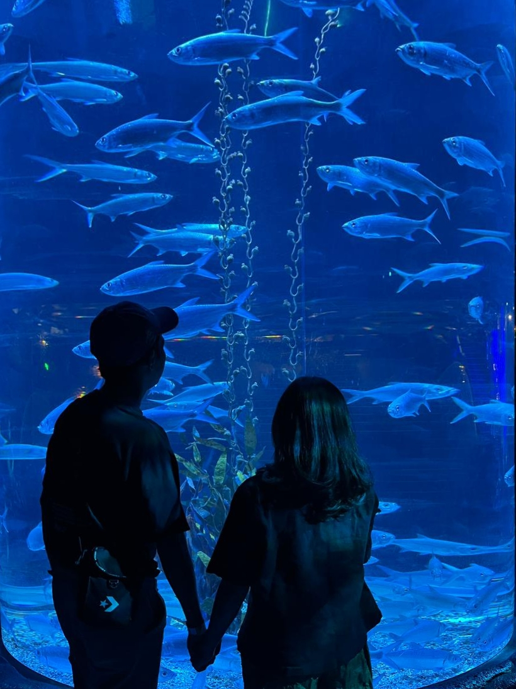 | 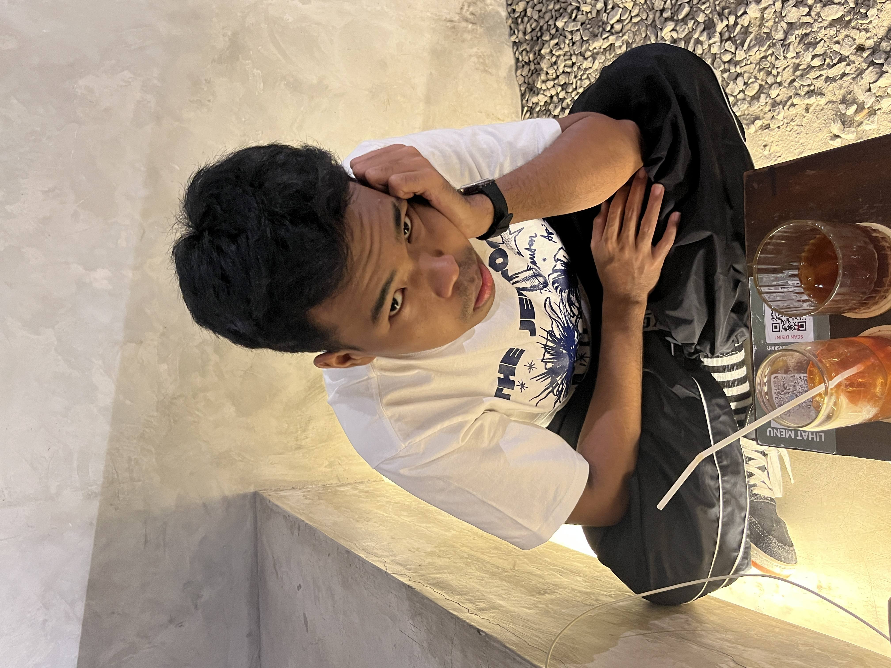 |
| 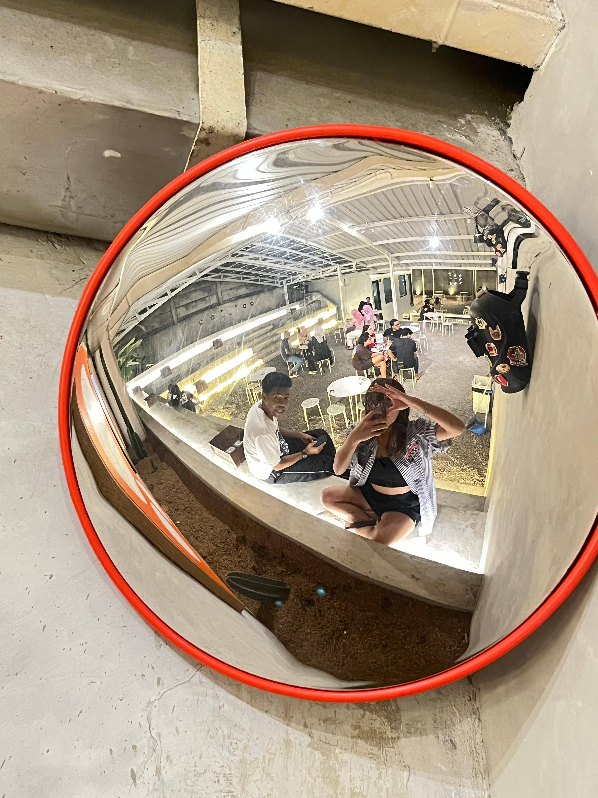 |
|
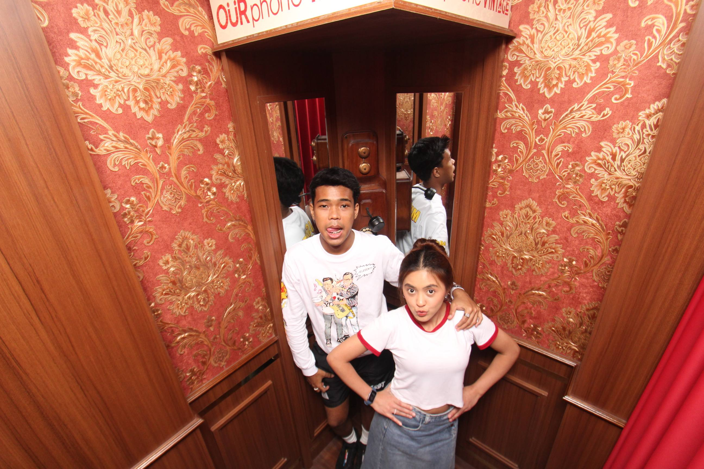 |